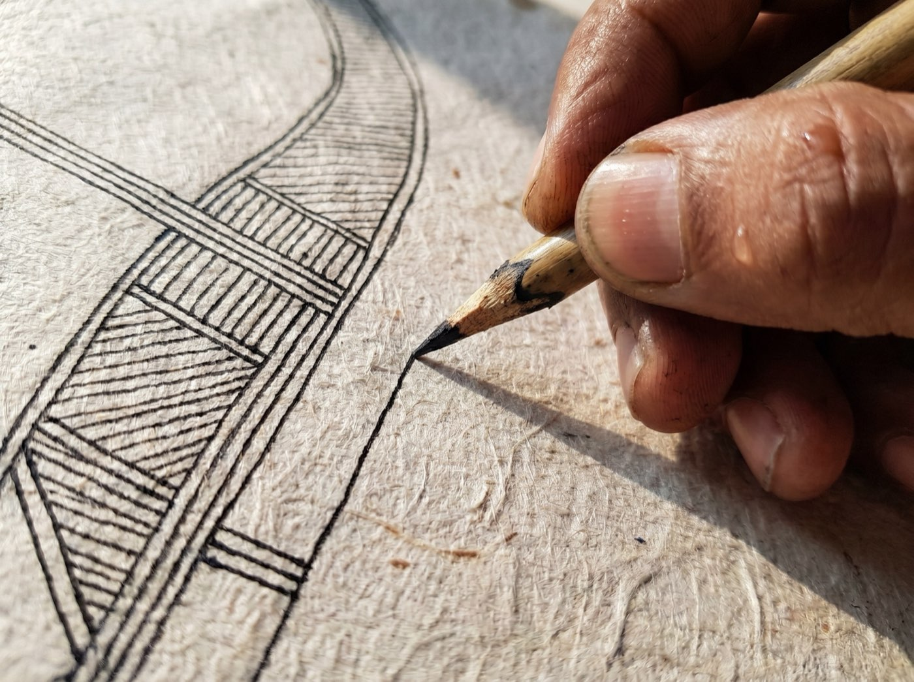

Svāgatam स्वागतम्
Curator’s Note · a welcome
Preserving the soul of the artisan’s hand.
A boutique curation house and B2B art advisory, led personally by its founder, a physician by training.

Welcome to Artha Indus Atelier.
We are a boutique curation house and B2B art advisory devoted to one discipline: the archival curation and architectural integration of South Asian heritage art. Grounded in restraint and precision, we bring ancient master lineages into modern U.S. corporate, hospitality, and healthcare environments through two core offerings.
Bespoke Physical Commissions
Authenticated, museum-grade originals float-mounted for executive C-suites and gallery collections.
Enterprise Digital-Twin Licensing
Artwork captured at 600 DPI and rebuilt as infinitely scalable vector geometry, engineered for wallcoverings, acoustic wallcoverings, bas-reliefs, 3D CNC millwork, and etched architectural glass.
Our commitment: preserve the soul and provenance of the artisan’s hand, and carry the technical weight of ethical sourcing, custom scaling, and architectural specification ourselves.
The Curatorial Thesis
We distill centuries of South Asian iconography into quiet, disciplined visual systems for contemporary architecture.
Explore our world at www.arthaindus.com, or request our Executive Lookbook via the Collaborate page.